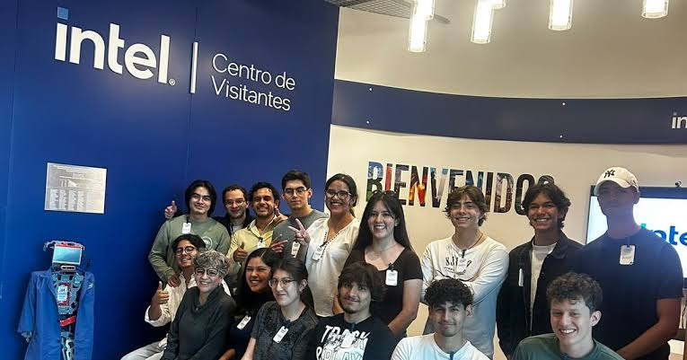
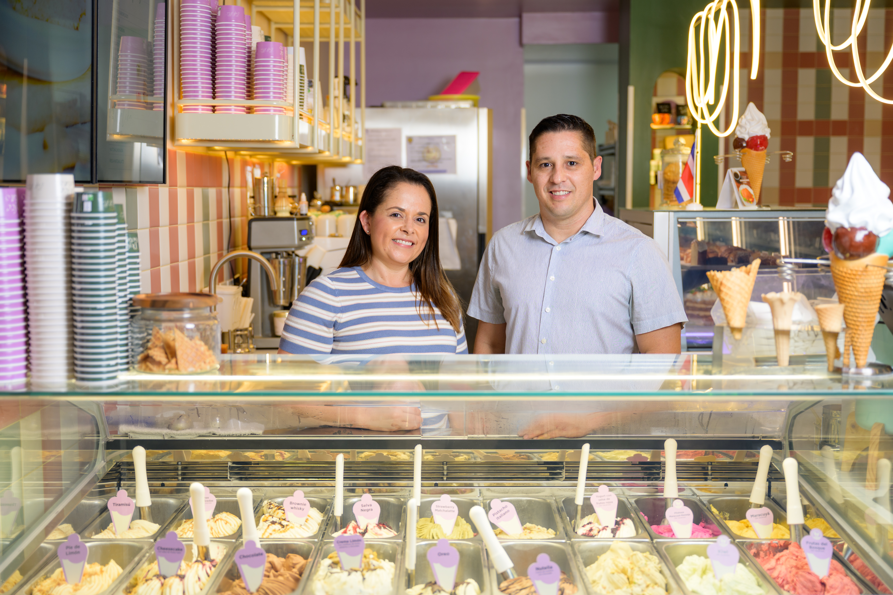
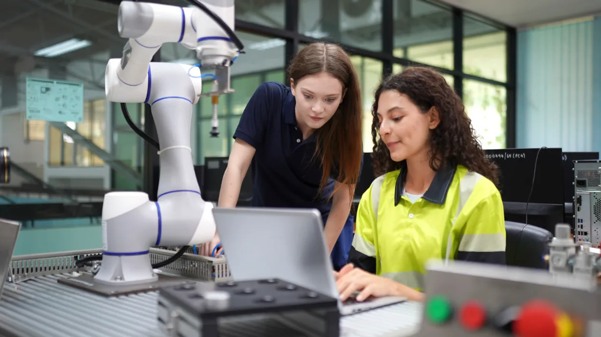

Centros tecnológicos
Espacios donde profesionales desarrollan soluciones digitales y tecnológicas.
Descubrí cómo la tecnología, el talento y el emprendimiento impulsan el desarrollo de Costa Rica.
Costa Rica cuenta con espacios, empresas y comunidades que promueven la innovación.

Espacios donde profesionales desarrollan soluciones digitales y tecnológicas.

Nuevas ideas y proyectos que buscan ofrecer soluciones a diferentes necesidades.

Preparación de profesionales en programación, ingeniería y nuevas tecnologías.
Desarrollo de conocimientos y nuevas soluciones mediante la ciencia y la tecnología.
La colaboración entre empresas, instituciones educativas y emprendedores permite desarrollar nuevos proyectos.
Estas iniciativas contribuyen al crecimiento del ecosistema tecnológico costarricense.
Conocé más sobre las oportunidades de tecnología e innovación que ofrece nuestro país.
Explorar Costa Rica Tech Hub